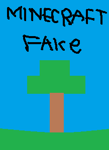

Minecraft
edas left toenail: 5/5
Jul 19, 2024
This game is perfect! The only problem I actually have is the controls, i really liked the old controls and with the new controls it's really hard to get used to, and sometimes (it's been getting more often) after I customize the controls to be more my style it changes back to the default settings after like a minute and it kinda bothers me alot, and i read a ton of other people have the same issue. But besides that this is an amazing game!
Nicholas Bahari (小尼): 5/5
Apr 10, 2024
I often like to revisit this game to reminisce on the good old days. I still remember pocket edition back when infinite worlds weren't a thing and the nether reactor core was a thing. Oh and don't get me started with seeing GRASS on multiplayer lifeboat server in it's prime for the first time. This game really shines when you play with friends on a LAN single player world oh the memories forged from it! and do be warned it's a complex game that can technically be played forever.
Stephen Smith: 5/5
Jul 23, 2024
Love the game. The recent change in controls is taking a bit to get used to after playing with the same old ones for 6 years. I'm adjusting though. One new thing I really like is not having to pay again if you uninstall it and then reinstall it on the same device. I can remember at least 4 or 5 times when I uninstalled it, either unintentionally or to save storage space, and then I had to pay for it again. I don't know exactly when this changed, but I'm so glad it did. Obviously 5-star worthy.